猫スタッフ
在籍スタッフ
-
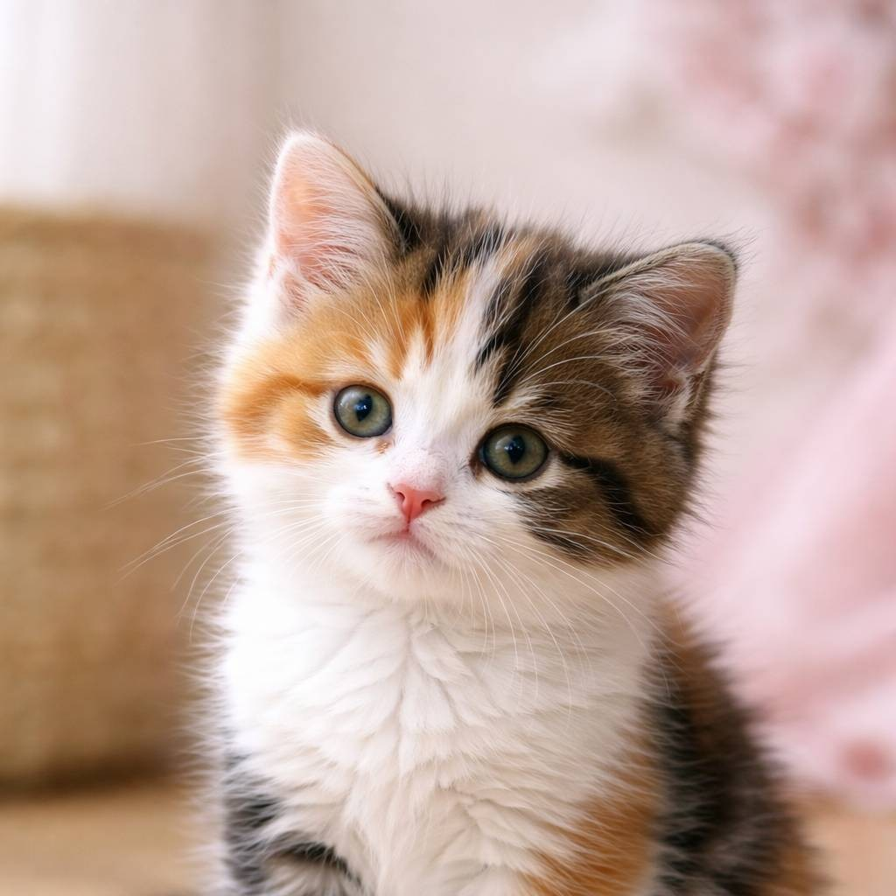 こはる
女の子 / 生後2ヶ月
性格：甘えんぼ
ひとこと：なでなで待ってるにゃ〜 -
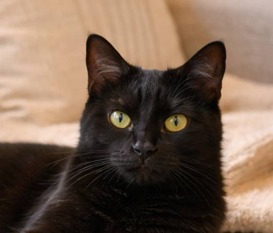 だいず
男の子 / 1歳2ヶ月
性格：好奇心旺盛
ひとこと：おもちゃ投げて？ -
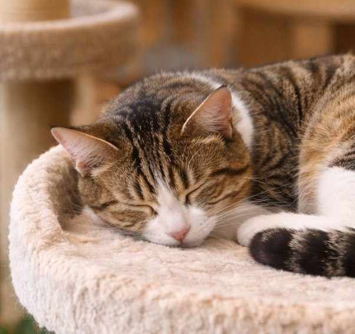 みつき
女の子 / 1歳8ヶ月
性格：おっとり
ひとこと：ゆっくりしていってね -
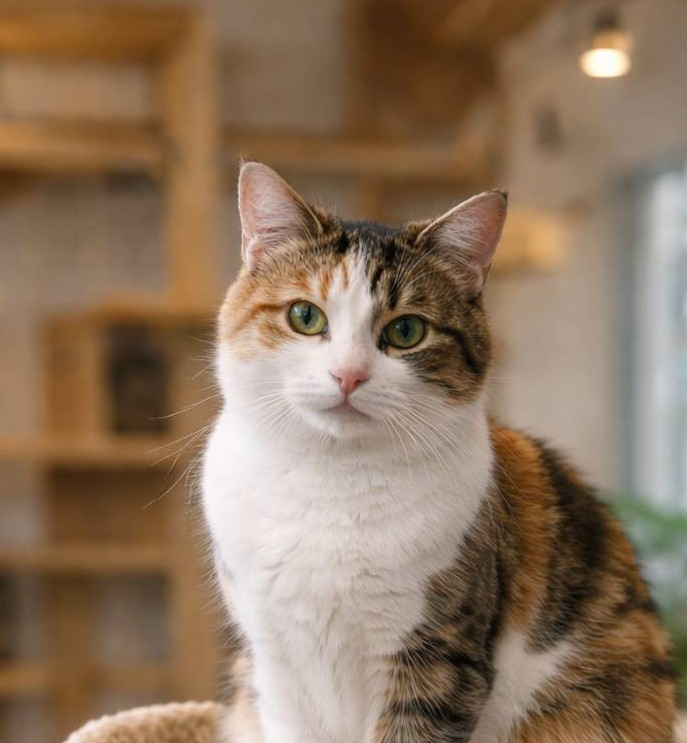 こてつ
男の子 / 生後6ヶ月
性格：遊び上手
ひとこと：追いかけっこしよ！ -
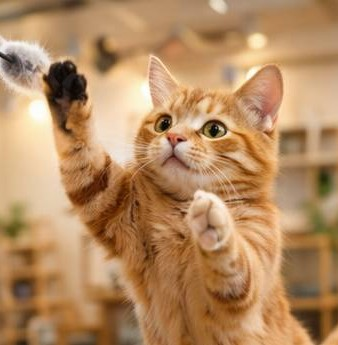 テツ
男の子 / 生後2ヶ月
性格：やんちゃ
ひとこと：追いかけっこしよ！ -
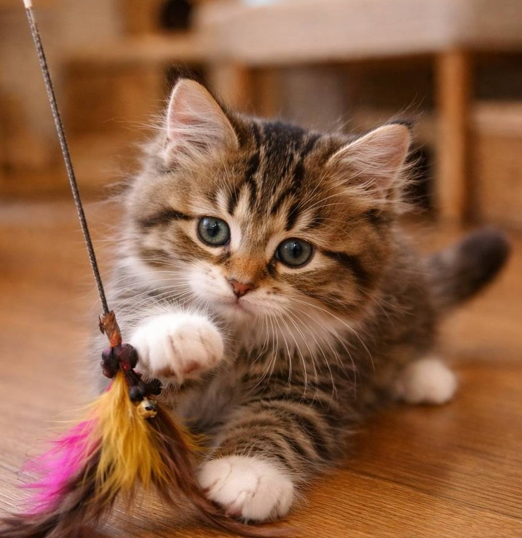 ナナ
女の子 / 生後2ヶ月
性格：マイペース
ひとこと：追いかけっこしよ！ -
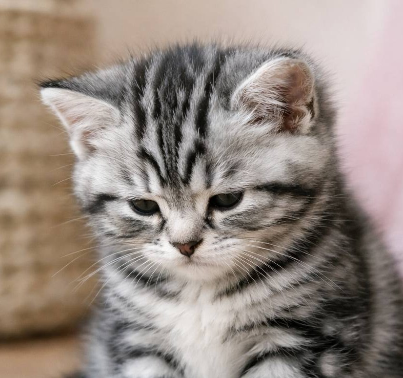 あずき
男の子 / 生後2ヶ月
性格：おっとり
ひとこと：遊んでね～ -
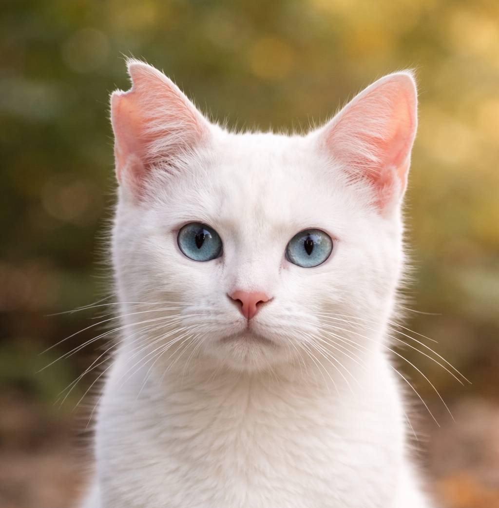 雪
女の子 / 生後9ヶ月
性格：甘えん坊
ひとこと：なでてほしい♪
卒業スタッフ
-
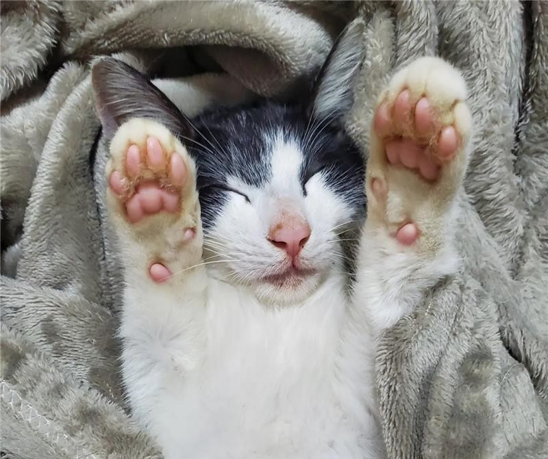 みるく
女の子 / 3歳
性格：やんちゃ
ひとこと：家族ができたよ、ありがとう -
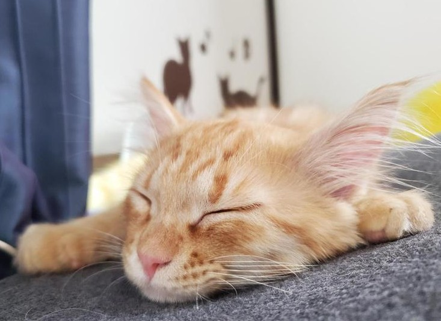 テト
男の子 / 6歳
性格：のんびり
ひとこと：新しいおうちで元気だよ -
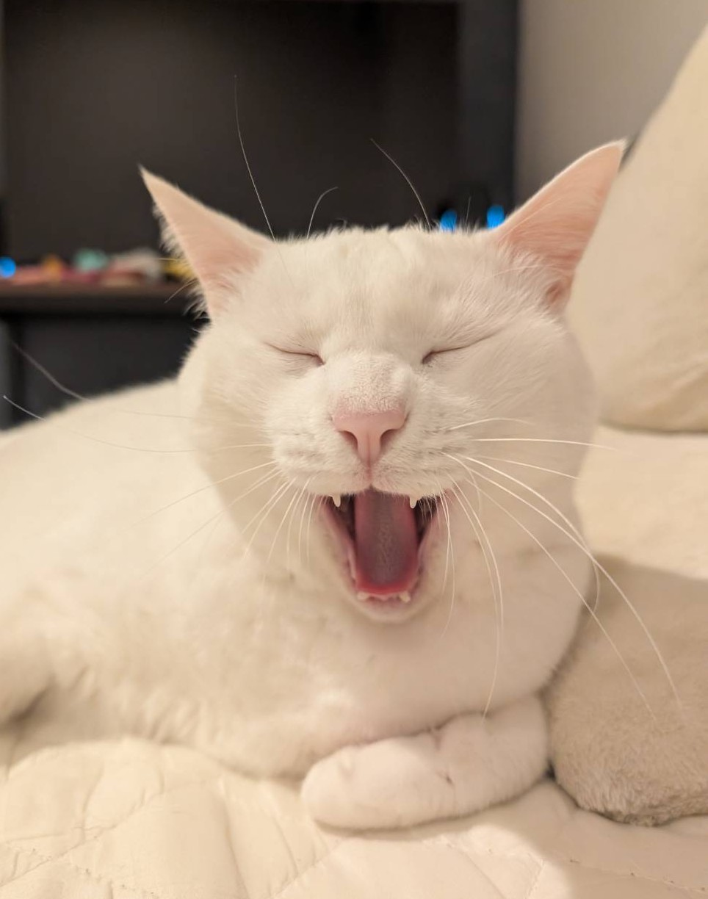 ココ
女の子 / 7歳
性格：人なつっこい
ひとこと：家族ができたよ、ありがとう -
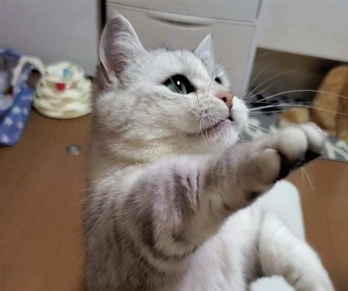 珊瑚
女の子 / 7歳
性格：お嬢様
ひとこと：家族ができたよ、ありがとう -
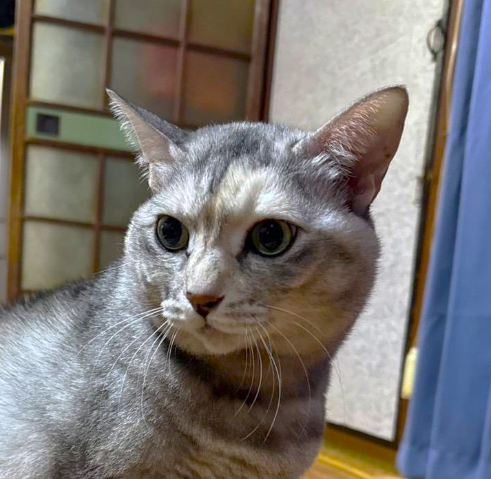 白
女の子 / 8歳
性格：ツンデレ
ひとこと：家族ができたよ、ありがとう -
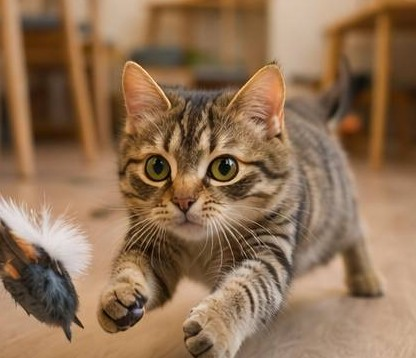 大吉
男の子 / 1歳6ヶ月
性格：暴れん坊
ひとこと：家族ができたよ、ありがとう -
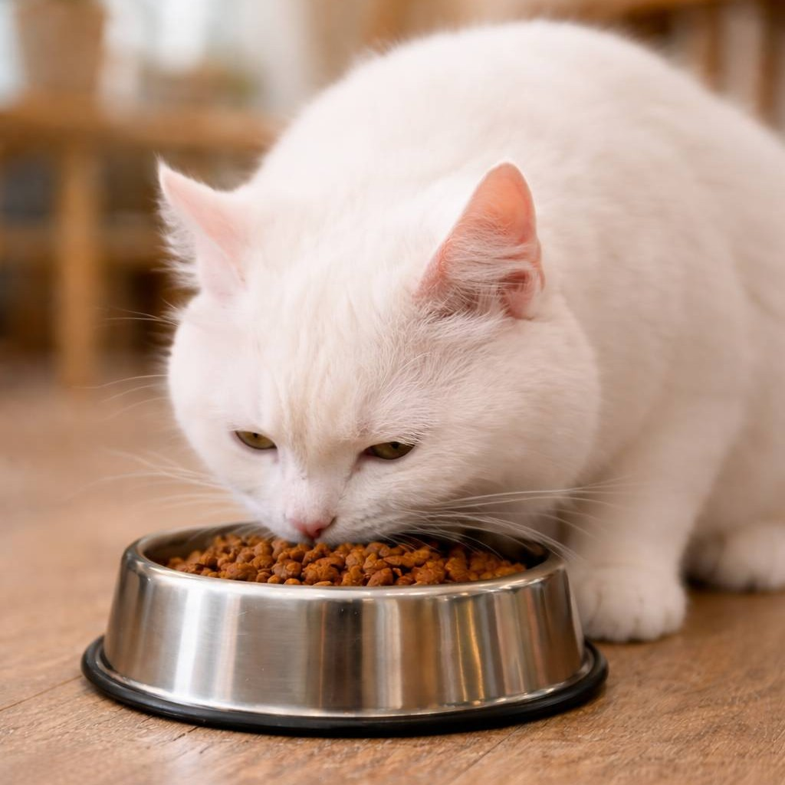 海
男の子 / 1歳9ヶ月
性格：おっとり
ひとこと：家族ができたよ、ありがとう -
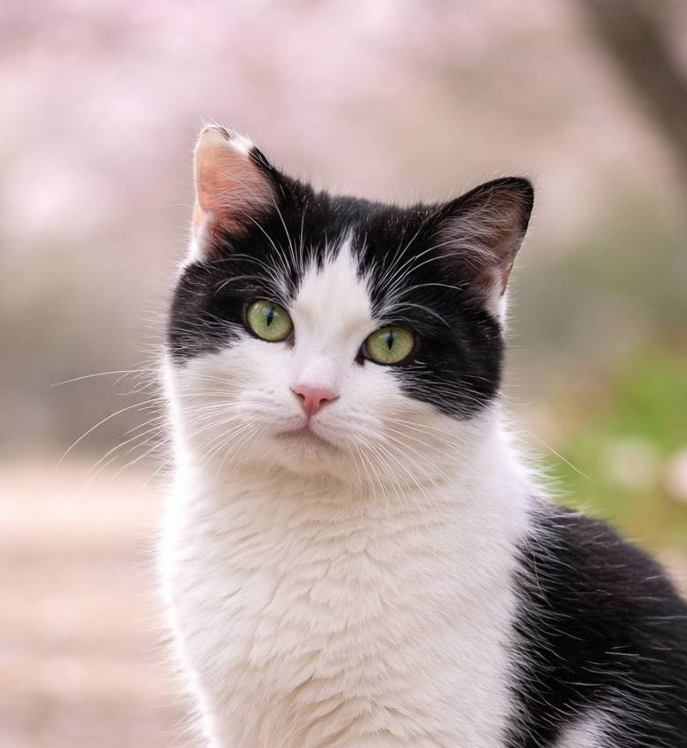 空
男の子 / 1歳6ヶ月
性格：人なつっこい
ひとこと：家族ができたよ、ありがとう